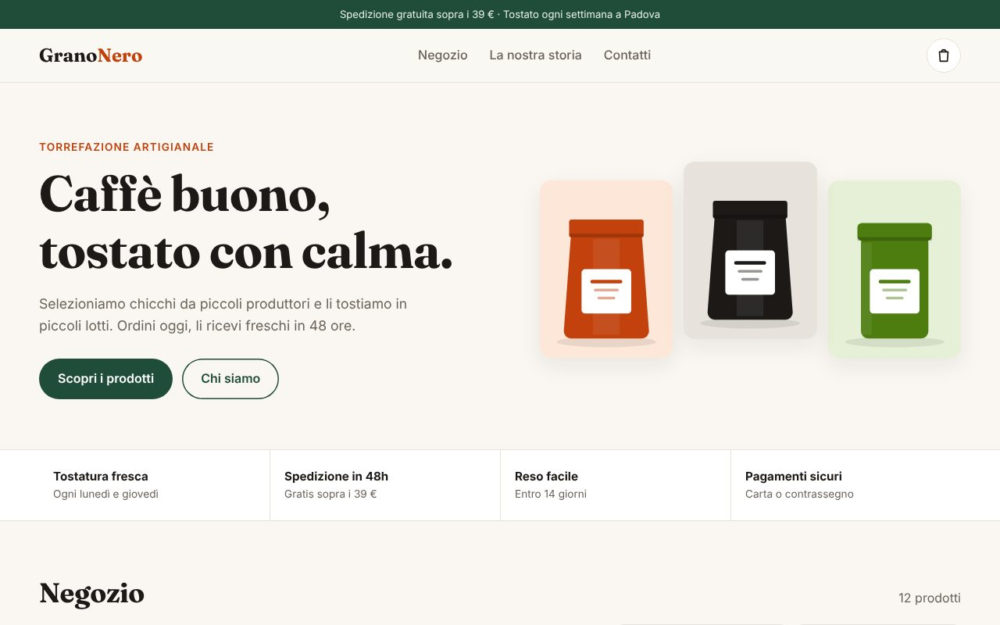

Ciao, sono
Ayoub Balhouh
Junior Web Developer
Creo siti web, e-commerce e applicazioni con PHP, Laravel, MySQL e WordPress. Unisco sviluppo e digital marketing per costruire siti che funzionano e portano risultati.
📍 Padova · Vicenza · Treviso